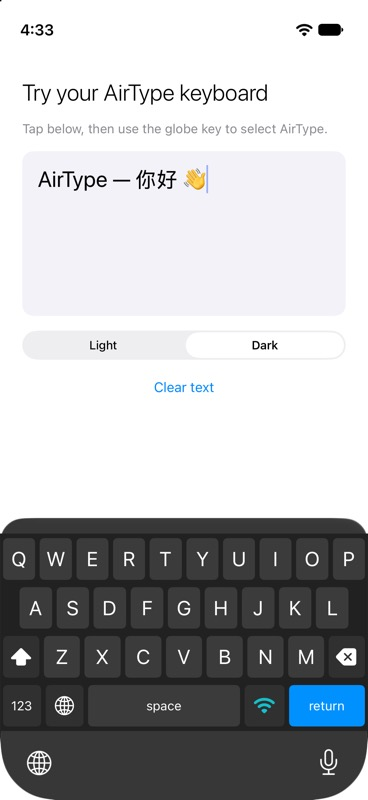

一個網頁，連起兩個裝置。
AirType Web Access
AirType
試打一段文字，再按傳送。
我的筆記
傳送後，文字會出現在這裏。
等待輸入
AirType
親手試吓
互動示意 · 不會連接或傳送到你的裝置
用返手邊的電腦。
一個瀏覽器就夠。 Mac / Windows / Linux 毋須安裝電腦程式 同一 Wi-Fi 連接
一個瀏覽器就夠。 Mac / Windows / Linux 毋須安裝電腦程式 同一 Wi-Fi 連接
由電腦，到手機。

在瀏覽器輸入
資料整理好了，
我而家傳俾你。
用你熟悉的鍵盤與輸入法
在 iPhone 或 iPad 接收
資料整理好了，我而家傳俾你。
輸入、傳送，文字就出現在目前的輸入欄。
01 / 電腦打字，手機接收長一點的文字，
長一點的文字，
用慣的鍵盤打。
回覆訊息、整理筆記、輸入一段長文字。留在電腦前，用熟悉的鍵盤和輸入法打好，再傳到 iPhone 或 iPad。
不必為手機，再裝一套軟件。
在手機切換到 AirType，電腦打開鍵盤顯示的網址。Mac、Windows 或 Linux，只要有相容的瀏覽器，就可以開始。
02 / 想用手機打，一樣順手需要改幾個字，
需要改幾個字，
就喺手機直接改。
AirType 同時提供 QWERTY 鍵盤。需要補幾個字，或暫時離開電腦，切換回手機鍵盤就可以繼續。
Web Access 只在鍵盤開啟時連接。請讓電腦與裝置保持在同一 Wi-Fi，並使用你信任的網絡。

03 / 三步，開始用手機準備好，
手機準備好，
電腦就接得上。
- 01
下載並加入鍵盤
安裝 AirType，在系統設定加入鍵盤，並允許完整取用以使用網絡連接。
- 02
打開 Web Access
讓兩部裝置連接同一 Wi-Fi。在文字輸入欄切換到 AirType，顯示連接網址。
- 03
用電腦開始打字
在瀏覽器開啟鍵盤顯示的網址，按畫面指示連接。輸入文字，按 Enter 傳送。
一張工作枱，
用返自己的節奏。
AirType，連起電腦與 iPhone 的輸入。